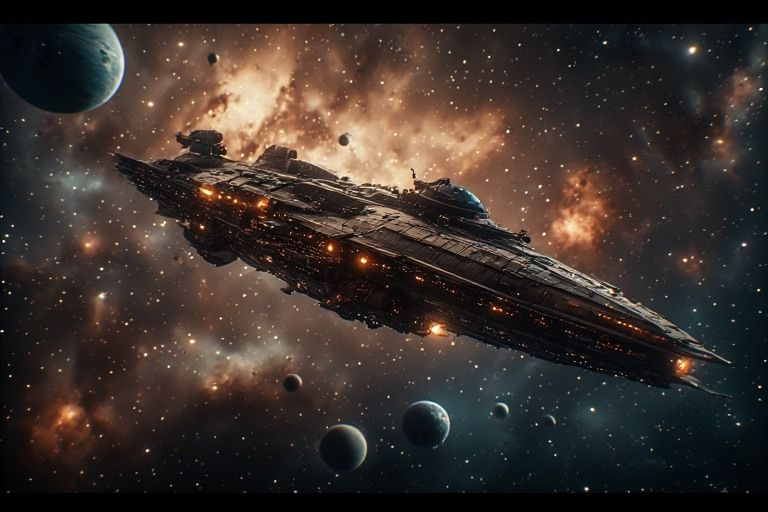

Adventures
Visual storytelling beyond the Stargate. Comic panels, generated scenes.
In the live ship this room was a comic-panel viewer; this static edition has no panels yet.

You've stepped through the portal. The rules are different here.
Field reports
THE INCIDENT
Or: How We Learned to Stop Worrying and Document Everything
The crew attempts to reconstruct what happened during a "routine supply run" that resulted in three hull breaches, one diplomatic incident, and an unexplained crate of alien fruit. This is Penny's official record, assembled from security footage and unreliable narration.
No panels yet: the first adventure is scaffolded and waiting for its images.
Penny's margin notes
- You're beyond the Stargate now. The light is different here.
- Field reports are assembled from security footage and unreliable narration.
- Every adventure starts with someone saying 'what if' and ends with someone saying 'oh no.'
- Penny's official record. Not because it's accurate — because I was there.
- The panels don't always tell the truth. But they tell A truth.
- Mnem keeps asking me to fact-check the field reports. I keep declining.